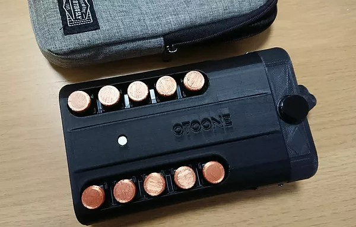

OTOONE_DEV
OTOONE の由来は OTO(音) と TONE(音色) を合わせた造語です。
読み方は「オトーン」です。私が子を持つ「お父ん」でもあります…。
X(Twitter)
Bluesky
YouTube
情報を随時公開予定です。
AFUUE (ウインドシンセサイザー)
超小型のウインドシンセサイザー(電子管楽器)です。
３オクターブ半の広い音域と、息による音の強弱で、感情をこめた演奏表現が可能です。
BOOTH 内で工作キットとして販売
しています。(売り切れの際は「入荷お知らせメール」にご登録ください)
AFUUE 内蔵ソフト更新
はこちらからどうぞ。
AFUUE2R
MIDI出力端子と、新開発ダブルウィンドウェイによるピッチベンドを搭載
AFUUE2
はんだ付け不要の工作キットです。初代に比べて品質が大幅アップ。
M5StickC Plus というマイコンが背面についているので、設定画面を呼び出せます。
音色は AFUUE と同じ４種類ですが音質が向上しています。
AFUUE
お客様による抵抗やLEDなどの部品単位をはんだ付けする工作キット販売でした。

演奏サンプル
OTOONE_DEV
・
MakerFaireTokyo2020 向けオリジナルデモ曲 / アドリブ演奏 : Jesahm
今までの経緯
右から１号機、２号機、４号機、５号機、６号機、８号機、９号機
下の長いやつは３号機と、７号機です。
このうち５号機、６号機(AFUUE)、９号機(AFUUE2)を色んな方に販売させていただきました。
10号機(AFUUE2R)も数台販売し、後継機を開発中です。
2018/02
１号機は、キーが中央の軸を中心に倒れる仕組みです。加工が大変でした。
3Dプリンタも不慣れで本体に隙間があります。Arduino Nano が中に入っています。
2018/05
２号機は、キーが独立し、本体の隙間も改善。こちらも Arduino Nano が入ってます。
完成度が上がりましたが、組み立てはキー１つずつに線材をハンダ付けするので大変でした。
2018/07
３号機は、デザインを管楽器に近づけるテストです。こちらも Arduino Nano が入ってます。
キー１つずつに線材をハンダ付けする大変さは変わらず、本体が複数パーツのため組み立ては最高難度です。
2019/03
４号機は、プリント基板になり、Arduino をやめ AVR マイコンを直に使うようになりました。
組み立ても容易になり、なんとか量産できそうなレベルに達しました。
2020/05
５号機は、ESP32 モジュールと秋月電子さんの AE-PAM8012 アンプを使用することで音質と音量が大幅に改善しました。
５号機の内部基板は１枚です。ここに ESP32 モジュールやスイッチ、気圧センサーなどを実装して、3D プリンターで作った筐体に入れるだけで完成です。
Maker Faire Tokyo 2020 (2020/7 東京ビッグサイト)
に出展し「バッテリー内蔵してほしい」とか「売れると思うよ」と言っていただけました。
また、会社内の数人の方々に買っていただき「もっと完成度あげれば売り物にできるんじゃないだろうか」と自信をつけた時期です。
2021/02
６号機は５号機を乾電池で動作するように拡張したバージョンです。
10台くらい量産してみました。
この台数でも筐体印刷、マニュアル作成、動作検証、袋詰めなどかなり大変でした。
その成果としてBOOTH 内で工作キットとして販売しました。
2021/11
７号機は形状を３号機のように長くしたものです。
この世代から M5Stack 社の製品を使用するようになっています。
M5StickC Plus という製品を搭載し、充電して使用できるようになりました。
2022/03
８号機は形状を思い切りコンパクトにしたものです。ヘッドホン端子やボリュームがありません。
これとは別に表面のキーの数を 10個 から 8個 に減らして SpeakerHAT というスピーカーを載せたバージョンも作りました。
M5SitckC Plus を背面に搭載したのですが配置に悩んでいた時期です。
2022/09
９号機はキースイッチを CherryMX から Kailh ロープロファイルに変更、キーキャップも既成のものを使うように変更。
気圧センサーも MIS-2503 に変え、湿気による誤動作がほとんどなくなりました。
BOOTH で AFUUE2 という名前で工作キットとして販売
しました。
2024/05
10号機は特許でも取れそうなダブルウィンドウェイ(吹き口の穴が２つあって気圧差を利用する)によるリップセンサーを搭載。ピッチベンドが可能になりました。
M5StickC Plus だと背面の配置に難があるので M5StampS3 を採用。画面がなくなってしまいました。
その代わりに MIDI 出力端子が付き、M5Stack 社の TailBat というバッテリーを内蔵できるようにしました。
BOOTH で AFUUE2R という名前で工作キットとして販売
しました。
Maker Faire Tokyo 2024 (2024/10 東京ビッグサイト)
に４年ぶりに出展しました。
2025/02 現在
AFUUE2R の改良版を設計中です。それが終わり次第 AFUUE2 の改良版も作る予定です。
サイズ感
カシオ デジタルホーン DH500 とのサイズ比較。超小型です。
ヤマハ WX5 とのサイズ比較。超小型です。
これくらい小型だとカバンに入れて、いつでも持ち歩きできます。
市販のウインドシンセは気軽に持ち運べないですが、AFUUE であれば旅のお供や、散歩、友人宅などで大活躍すること間違いなしです！
OTOONE (Android楽器アプリ)
画面をスクロールする事なく、４オクターブで和音が演奏できる、おそらく唯一の Android アプリでした。
タッチしながらスライドする事でポルタメントもできます。
色は各スケールを表しており、D メジャーで演奏したい時は黄色いラインを見ればＯＫの簡単仕様。
Google の開発者条件が厳しくなったためアプリの配信は終了しました。
プレイ動画